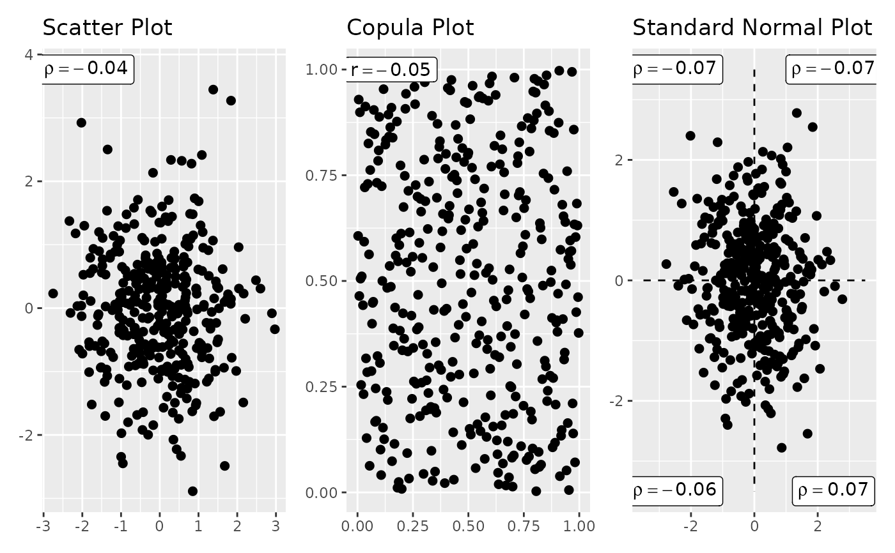

Computes bivariate correlation diagnostics for two xts
timeseries. The function produces a three-panel plot consisting of a
scatter plot annotated with the Pearson correlation coefficient, an
empirical copula plot annotated with the Spearman correlation
coefficient, and a standard-normal semi-correlation plot that
decomposes the joint dependence into four quadrant-specific
correlations. Missing values are handled via casewise deletion, and
zero values below a supplied threshold may optionally be filtered
before computation. When check_common = TRUE, only dates common
to both series are retained, ensuring paired comparisons on
synchronised indices. The panels are assembled via
patchwork::wrap_plots and returned as a list alongside the
individual ggplot objects and a correlation table.
Arguments
- x, y
xts objects containing the time series data.
- check_common
Logical. If
TRUE(default), only dates present in both series are used.- ignore_zeros
Logical. If
TRUE, values belowzero_thresholdare excluded. DefaultFALSE.- zero_threshold
Numeric. Threshold below which values are treated as zero. Default
0.01.
Value
A list with elements combined (patchwork of the three
panels), scatter_plot, copula_plot,
normal_plot (individual ggplot objects), and
correl_table (matrix of Pearson, Spearman, and four
semi-correlation coefficients).
Examples
x <- xts::xts(rnorm(365), order.by = as.Date("2020-01-01") + 0:364)
y <- xts::xts(rnorm(365), order.by = as.Date("2020-01-01") + 0:364)
correls <- correl_plots(x, y, check_common = TRUE)
correls$combined
#> Ignoring unknown labels:
#> • colour : "Case"
#> Ignoring unknown labels:
#> • colour : "Case"
#> Ignoring unknown labels:
#> • colour : "Case"
#> Warning: Removed 10 rows containing missing values or values outside the scale range
#> (`geom_line()`).
#> Warning: Removed 10 rows containing missing values or values outside the scale range
#> (`geom_line()`).
